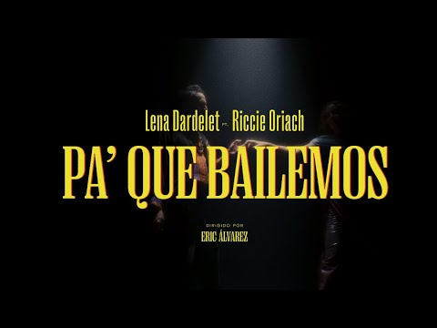

Música / 2025
Un encuentro pa’ que bailemos.
Lena Dardelet y Riccie Oriach se encuentran en una canción hecha para moverse.
Seguir leyendoHistorias del camino
Los discos, las colaboraciones y las historias que van dando forma al viaje.

Música / 2025
Lena Dardelet y Riccie Oriach se encuentran en una canción hecha para moverse.
Seguir leyendo
Discografía / 2021
Ocho canciones para entrar en el universo de su álbum de 2021.
Seguir leyendo
Discografía / 2020
El EP producido por Eduardo Cabra que conecta raíz dominicana y nuevas posibilidades.
Seguir leyendoLa experiencia en vivo
La banda, la gente y esa energía que solo pasa cuando estamos juntos. Nos vemos frente a la tarima.
Nos vemos en vivo